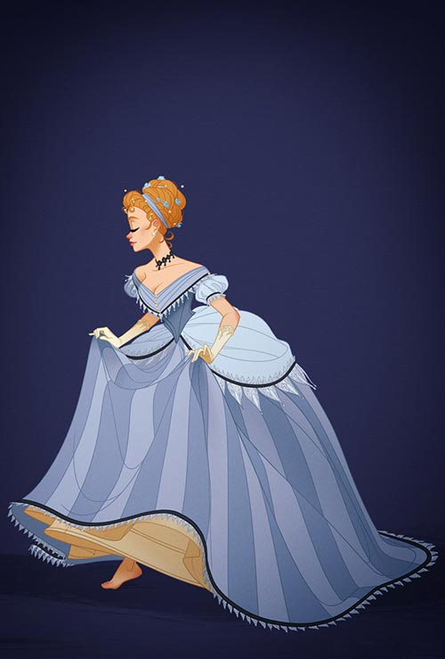
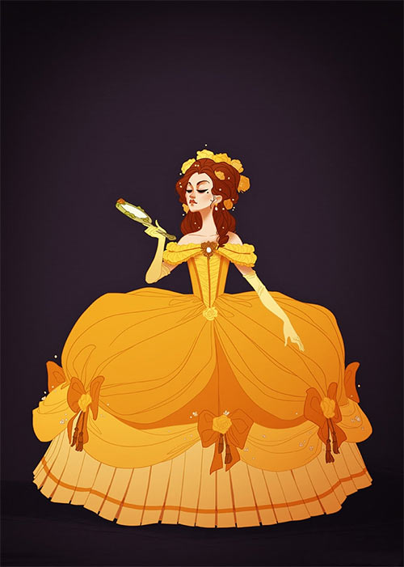
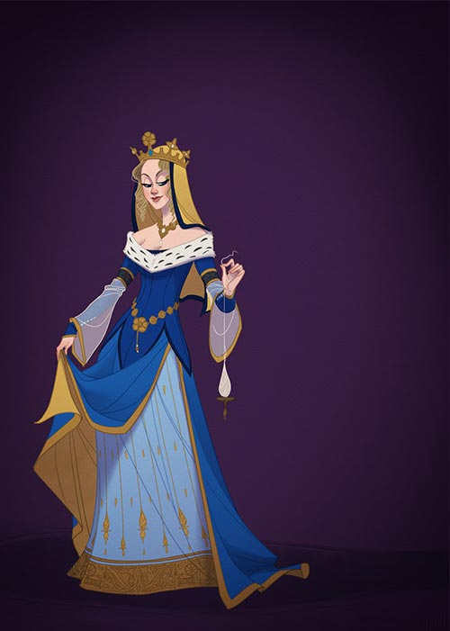

Cinderella wearing European fashion of the mid-1860’sRapunzel, clothed in 1820’s period fashion

Belle, based on 1770’s French court fashionMulan, based on the Ming Dynasty period

Sleeping Beauty, based on European fashions in 1485Pocahontas based on 17th century Powhatan costumeSnow White, based on 16th century German fashionAriel wearing an evening gown of the 1890’sTiana wearing the robe de style of the 1920’s